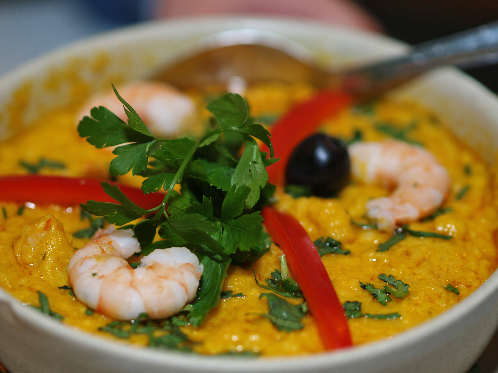

Vatapá

Recipe Description
Vatapá is a brazilian creamy dish popular in North and Northeast regions, made with flour or bread base cream with shrimps.
Dish type: non-veg
Dish temperature serving: Warm temperature
Dish complexity: easy
Origin country: Brazil
Ingredients
- 1kg shrimps
- 2 onions
- 250 ml coconut milk
- 1 spoon of salt
- black peper
- 4 spoons of palm oil
- 3 tomatoes
- chopped Coriander (optional)
- chopped Parsley(optional)
- 500g old bread
- 500ml cow milk
Steps
- Saw the shrimps together with all spices and veggies - do not add the milks and bread
- Mix the coconut milk, cow milk and bread in the blender for 2 minutes
- After sawing the shrimps and finishing with the milk, add the content from the blender into the pot, together with the shrimps
- Let it cook for about 15 min, always stirring with the spoon
- Adjust the salt, and it is finished!
Go back to homepage